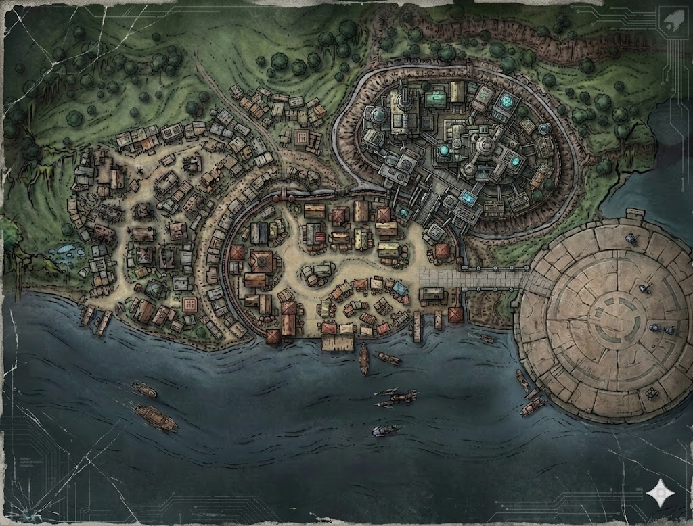

Takodana. Far shore of Nymeve Lake. Across the water from Maz Kanata's castle, where the people who don't want neutral ground come to do business without rules. Blackwind Point isn't a shantytown — it's an old settlement, built on the bones of a pre-Republic temple complex that once served the same hilltop fortress Varga the Hutt now calls home. The stone buildings are centuries old. The cargo pods are decades old. The people turn over every few weeks. The only constant is the lake, the jungle, and whoever sits in that fortress collecting percentages on everything that moves.
The backbone of Blackwind Point is pre-Republic stonework — the same massive fitted blocks that make up Varga's fortress on the hill above. These were the service buildings, gatehouses, and pilgrim shelters that supported the original temple complex. Centuries of jungle growth, collapse, and scavenging have reduced most of them to shells, but the ones that survive are solid — thick walls, stone lintels, foundations that don't shift. Between and around the old buildings, decommissioned cargo pods have been converted into living quarters, shops, and storage. The pods are standard-issue freight containers — durasteel, weather-sealed, surprisingly livable with minimal modification. The combination of ancient stone and industrial metal gives the settlement a layered feel, like geological strata of civilizations that didn't quite succeed.
Roughly 400 meters east-to-west and 300 meters north-to-south. Population fluctuates between 150 and 300 depending on trade traffic and refugee arrivals. One cantina, one market, two landing pads, two piers. Enough to support a small economy based on lake trade, smuggling, and Varga's protection racket. Not large enough to get lost in — but large enough that tracking one person requires asking the right questions in the right places. Anchorhead-sized, if Anchorhead had a lake, a jungle, and a Hutt.
Nymeve Lake dominates the southern boundary. Dark water, deep, surprisingly cold for a temperate world. On clear days, you can see the silhouette of Maz Kanata's castle on the far shore — a reminder that civilization exists, just not here. Skiff traffic crosses the lake regularly — cargo, passengers, the occasional desperate refugee paying for passage to Maz's side. Varga's fortress sits on a hill to the northeast, accessible by skiff from the main pier. The lake is the settlement's lifeline: water supply, trade route, and escape route.
Takodana's jungle presses in on three sides — north, west, and east. Massive broadleaf trees, hanging moss, bioluminescent fungal growth at night. The treeline is a hard boundary: inside the settlement, the ground is packed earth and mud. Beyond the treeline, it's root systems, standing water, and undergrowth thick enough to hide a bantha. The eastern swamp is where Raden fled. The abandoned water filtration plant — his hiding place — is an hour's walk through trackless jungle. Varga's enforcers stopped at the treeline when they chased him. Nobody goes into that swamp voluntarily.
Besalisk. Four arms, three of which are always busy — pouring drinks, wiping the bar, and reaching for the holdout blaster under the counter. Runs The Drowned Sarlacc with brute-force hospitality. He'll serve anyone who pays, protect no one who doesn't, and trade information when the price covers his trouble. Raden drank here four days ago. Gorr remembers everyone who sits in his cantina. He just doesn't volunteer what he knows.
Toydarian. Runs a stall in the east market, wings buzzing as he haggles. Sold Raden ration packs and a portable charge cell three days ago. Paid in Imperial credits — unusual for Blackwind Point, where most transactions use Hutt scrip. Shrewd, unhelpful unless given a reason. Credits loosen his tongue. Intimidation makes him clam up — he's been shaken down too many times to care anymore.
Aqualish dockhand. Works the piers. Sullen, cautious, keeps his head down. Saw Raden fleeing Varga's enforcers two days ago — watched him cut through the east market and vanish into the swamp treeline. Will talk if approached without hostility, especially over a shared drink. Won't talk to anyone who looks or smells Imperial.
Human refugee from Felucia. Mother of two. Camps in the old chapel for shelter. Exhausted, wary, protective. She doesn't know Raden by name, but she saw smoke from the direction of the old filtration plant yesterday morning while washing clothes at the lake. She responds to kindness — a ration pack, a kind word about her children. She won't volunteer information to anyone who reminds her of the people she's running from.
Ithorian water hauler. Gentle, cooperative, speaks through a translator unit. Stays at the waystation between jobs. He serviced the filtration plant's purification units two years ago and knows the layout intimately — including the maintenance shed on the west side with an Imperial-standard five-digit lock. Happy to help if asked politely. Genuinely puzzled about why anyone would hide there.
Zeltron. Manages three cargo pods in the northern cluster, rented by the hour for companionship. Discreet, professional, and perceptive. She works after dark and knows the settlement's nighttime rhythms better than anyone — who comes and goes, who meets whom, what moves through the lanes after the market closes. Not a gossip, but she trades in information the way she trades in everything else: for a fair price.
Wet earth and rotting vegetation — the constant baseline. Lake water, mineral and organic. Cooking smoke from the cantina kitchen and the refugee camp fire pit. Chemical fumes from the fuel depot when the wind shifts west. After rain, everything smells like mud and ozone. The cargo pods smell like metal and old sweat. The market smells like spice, machine oil, and whatever Mekka is soldering today.
The low hum of the generator, constant, felt more than heard. Lake water lapping at the pier pilings. Jungle noise from beyond the treeline — bird calls, insect drone, the occasional crack of something large moving through undergrowth. The market's haggling carries across the settlement during the day. At night: the generator hum, distant cantina music, and the deep silence of a place where people keep their voices down.
Warm and humid. Takodana is temperate but the lake keeps moisture in the air. Inside the stone buildings, it's cooler — the thick walls hold the night chill well into the afternoon. The cargo pods are ovens during the day and cold at night. The jungle edge is noticeably warmer, the canopy trapping heat. Rain comes without warning, heavy and warm, turning the lanes to ankle-deep mud within minutes.
During the day: filtered sunlight through persistent cloud cover, occasionally broken by shafts of gold when the clouds part. The settlement sits in a natural bowl between the jungle and the lake, so shadows are long in the morning and evening. At night: amber glow-rod lanterns on the main paths, the warm light from cantina windows, the red glow from Lys's pod, and the green-white bioluminescence from the jungle treeline. When the generator cuts out, it's dark enough to see the stars reflected in the lake.